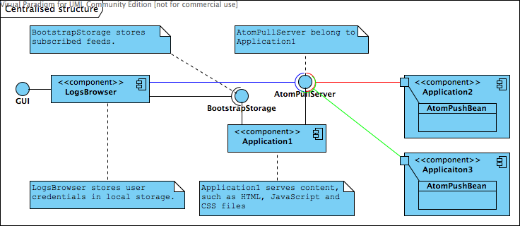
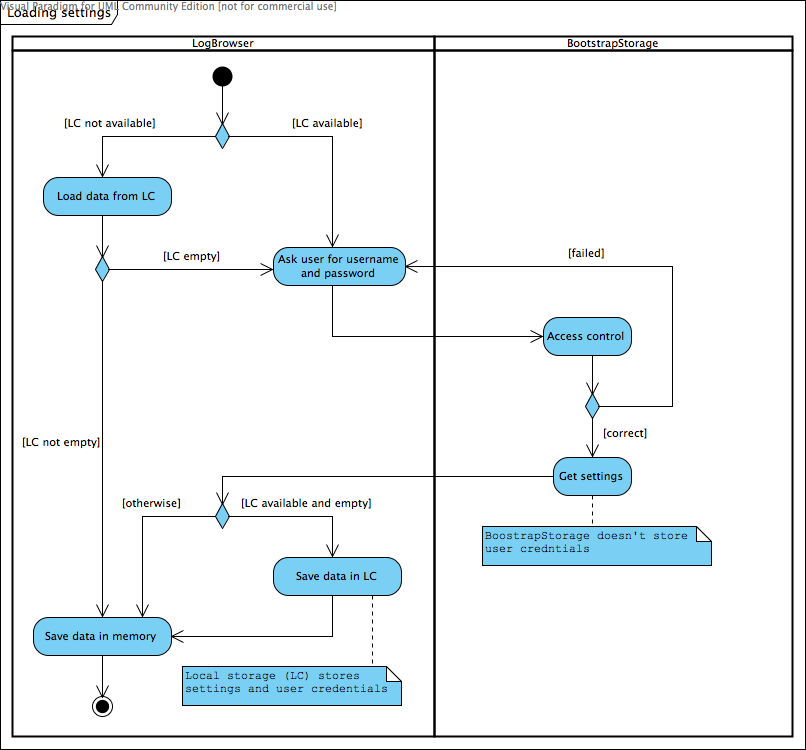
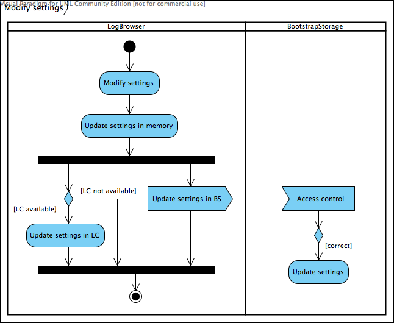
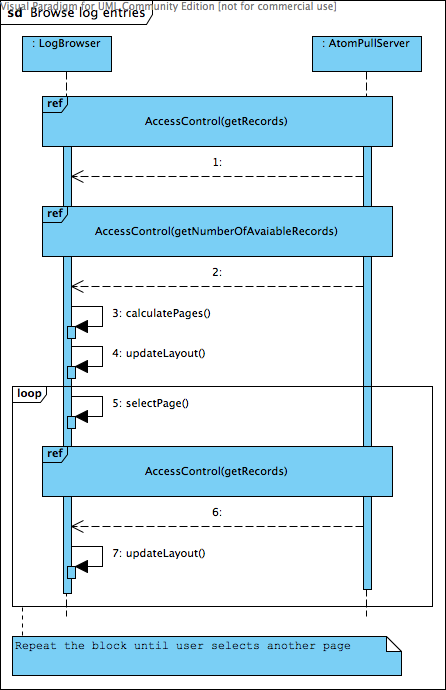

系统架构设计
定义
- BootstrapStorage是提供用户订阅的供稿列表的服务；
- LogsServer是独立的应用程序，它发布
AtomPullServer和BootstrapStorage端点。它包含提供内容（例如HTML，JS或CSS文件）的Web服务器；
选择的系统架构
只有一个应用程序可以发布AtomPullServer和BootstrapStorage Intranet中的端点–应用程序具有“管理角色”。该应用程序必须包括用于提供内容的Web服务器。如果要为Intranet中的另一个应用程序添加日志记录，则必须定义AtomPushBean在此应用程序中。 AtomPushBean将事件发送到AtomPullServer 。用户自己管理供稿列表-他必须知道端点的URL才能添加新的供稿。

好处
- 天然溶液；
- 可以轻松添加新功能；
- 用户设置被远程存储；
缺点
- 具有“管理角色”的应用程序执行其他任务-性能较差；
替代设计的讨论
带有日志服务器的集中式结构
它是先前概念的扩展。 AtomPullServer和BootstrapStorage已移至独立应用程序LogsServer。此外，LogsServer包括Web服务器。所有应用程序都通过以下方式与LogsServer通信AtomPushBean 。可以通过向CXF项目添加新模块来轻松完成此操作，该模块将使用AtomPullServer和BootstrapStorage并将编译为WAR软件包。

好处
- 天然溶液；
- 可以轻松添加新功能；
- 用户设置被远程存储；
- 应用程序不执行其他任务；
- LogsServer可以轻松更新为新版本；
缺点
- 用户必须配置和部署LogsServer（但是这没什么大不了，但这是一个附加步骤）
基于独立应用程序的日志浏览器的分散结构
日志浏览器是使用Swing库实现的。用户自己管理供稿列表-他必须知道端点的URL才能添加新的供稿。

好处
- 日志浏览器可以脱机工作；
- 订阅的提要和用户凭证可以存储在本地；
- 负载均匀分布；
缺点
- 很难分发和更新应用程序（日志浏览器）；
- 必须安装Java Runtime Environment。
基于Web应用程序的日志浏览器的分散结构
用户自己管理供稿列表-他必须知道端点的URL才能添加新的供稿。所需文件（HTML，JS和CSS）可从任何可用的Web服务器中检索。
好处
缺点
- Internet浏览器阻止连接到与地址栏中指定的主机不同的主机；
- HTML 5中引入的本地存储功能并未为所有互联网浏览器所采用（例如IE浏览器）;
组件的详细说明
日志浏览器
LogBrowser组件是富Internet应用程序（RIA）。它具有复杂的图形用户界面，可以适应用户的要求。LogBrowser组件将使用HTML，CSS和JavaScript制作，以与所有领先的Web浏览器完全兼容。
LogBrowser组件的主要功能是浏览日志条目，这些条目由AtomPullServer组件。搜索日志条目是浏览的扩展。通过建立适当的请求来完成，该请求与FIQL格式兼容。此外，用户的设置使用以下命令保存（或选择恢复） BootstrapStorage零件。
组件之间的通信将通过RESTful Web服务完成。数据交换将是异步的-不会阻止用户的操作。
LogBrowser组件将支持国际化。
技术
该组件将基于Google Web Toolkit （GWT）库实现。最初，我们计划使用JQuery和JQuery UI库来实现组件，但是在分析了项目的复杂性和Apache CXF社区的需求之后，我们决定使用GWT库。这个决定有两个优点：
- 组件将使用Java语言实现。接下来的GWT将其翻译成JavaScript语言。对于Apache CXF社区来说，最重要的功能是主要的编程语言是Java。另外，翻译后的代码也进行了优化以提高性能 。
- 使用JUnit库创建表示层的单元测试。对于JQuery库，将使用QUnit库和JavaScript语言创建单元测试。执行它们也存在问题（结果取决于Web浏览器）。
- 一大堆随时可用的小部件 。无需创建自己的自定义窗口小部件。
- 建立对国际化的支持。
储存设定
LogBrowser组件的功能之一是在本地存储用户的设置（端点配置，用户凭据等）。不幸的是，GWT不支持本地存储。因此，我们将使用DojoCore 。更准确地说，我们将使用DojoStorage模块，该模块是DojoCore的一部分。
Dojo Storage允许Web应用程序在用户的许可下持久且安全地在客户端存储数据。它可以在现有的Web浏览器上运行，包括Internet Explorer，Firefox和Safari。当包含在网页中时，Dojo Storage将确定持久存储信息的最佳方法。在Firefox 2上，它使用本机浏览器持久性；在其他浏览器上，它使用隐藏的Flash小程序。在大约95％的连接到Web的计算机上安装了 Flash 6+之后，该存储机制可用于Web的许多已安装基础。
如果Web浏览器不支持任何本地存储解决方案，则LogBrowser组件会将设置存储在操作内存中。设置将在应用程序生命周期中始终可用。如果用户关闭网络浏览器并再次运行应用程序，设置将从BootstrapStorage零件。
下图显示了加载和修改设置算法。


访问控制
AtomPullServer和BootstrapStorage组件通过RESTful Web服务发布其API。的访问控制AtomPullServer是可选的。但是访问控制BootstrapStorage是必须的。另一方面，对这些组件的访问控制将以相同的方式实现-使用WSSE UsernameToken。
授权所需的数据将通过HTTP标头发送，例如：
POST /atom.cgi HTTP/1.1
Host: bob.example.com
Content-Type: application/atom+xml
Authorization: WSSE profile="UsernameToken"
X-WSSE: UsernameToken Username="bob", PasswordDigest="quR/EWLAV4xLf9Zqyw4pDmfV9OY=",
Nonce="d36e316282959a9ed4c89851497a717f", Created="2003-12-15T14:43:07Z"
当授权失败时，Web服务将如下响应：
HTTP/1.1 401 Unauthorized
WWW-Authenticate: WSSE realm="foo", profile="UsernameToken"
授权过程使用UsernameTokenInterceptor。
下图显示了在访问控制期间执行的操作AtomPullServer和BootstrapStorage组件。


浏览，搜索日志条目
下图显示了在浏览和搜索日志条目期间执行的操作。


凌动服务器
的AtomPullServer组件管理日志条目。该组件通过注册的拦截器捕获新的日志条目。可以定义很多AtomPullServer在您的应用程序中-每个捕获不同类型的日志条目。与组件的通信是通过RESTful Web服务完成的。
目前AtomPullServer组件仅支持XML MIME类型。必须添加JSON类型支持。此外，还必须为选定的操作添加FIQL格式支持。
组件的RESTful Web服务包含以下操作：
- getXmlFeedWithPage-日志条目的操作返回列表。结果是分页的。如果请求采用FIQL格式，则操作将返回与参数匹配的日志条目列表。操作将支持XML和JSON MIME类型。
- getNumberOfAvailableRecords-所有日志条目的操作返回计数。如果请求采用FIQL格式，则操作将返回与参数匹配的日志条目计数。操作将支持XML和JSON MIME类型。
- getEntry-操作返回单个日志条目。操作将支持XML和JSON MIME类型。
引导存储
的BootstrapStorage存储用户的设置。需要为此组件定义访问控制。设置将存储在外部数据源中。我们将提供用于在XML文件中存储设置的基本实现-用户名必须是唯一的，因为它是关键。的BootstrapStorage由于安全问题，该组件将不存储用户凭据。与组件的通信将通过RESTful Web服务完成。只能定义一个BootstrapStorage在您的应用程序中。
组件的RESTful Web服务将包含以下操作：
- setSettings-操作会将用户的设置保存到外部数据源。操作将支持JSON MIME类型。
- getSettings-操作将从外部数据源加载用户的设置。操作将支持JSON MIME类型。